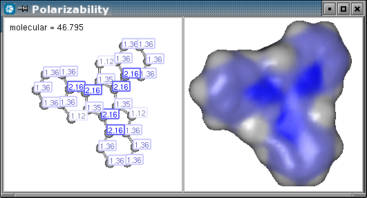

Let's suppose we have our own calculation that gives numbers to every atoms as a result, plus some
molecular values or other information we would like to display with MarvinSpace.
In this step by step example our goal will be to have the result that can be seen
on the folowing image.

Let's specialize it. We would like to:
We have a molecule and a set of values to each atoms of the molecule.
public JFrame createSpaceFrame(Molecule mol, ArrayList resultValues) throws Exception {
Let MarvinSpace install the necessary native libraries. We will use the MSpaceEasy
class to easily configure MarvinSpace. First, we need 1 row and 2 columns.
chemaxon.marvin.space.MSpaceInstaller.load(false);
chemaxon.marvin.space.MSpaceEasy mspace = new chemaxon.marvin.space.MSpaceEasy(1, 2);
Create the frame that contains the MarvinSpace canvas.
JFrame frame = new JFrame();
frame.setDefaultCloseOperation(JFrame.DISPOSE_ON_CLOSE);
mspace.addCanvas( frame.getContentPane() );
mspace.setSize( 800, 600 );
We would like synchronous control of the cells.
mspace.setProperty("SynchronousMode", "true");
We put the molecule to the first cell and create labels from the result values.
chemaxon.marvin.space.MoleculeComponent mc1 = mspace.addMoleculeTo( mol, 0 );
mspace.getEventHandler().createAtomLabels(mc1, resultValues);
Then put the same molecule to the second cell, and have its Connolly surface calculated.
chemaxon.marvin.space.MoleculeComponent mc2 = mspace.addMoleculeTo(mol, 1);
mspace.computeSurface( mc2 );
We are finished with the first step, the result can be seen on the image.
frame.pack();
return frame;
}

We should keep the component that represents the molecular surface.
chemaxon.marvin.space.MolecularSurfaceComponent msc = mspace.computeSurface( mc2 );
We choose our own colors to color the molecular surface. In this example we would like
to color areas that correspond to near zero values with gray, and areas that correspond
to higher values with blue. We also put a color between gray and blue as a breakpoint in
the homogenous color flow, so that we can better recognize higher values from lesser values.
Say we have the value range 0 - 2.16. With two colors it is a simple linear coloring.
But with adding an extra color that hardly differs from gray results the distribution
of the range of colors mainly on the 1.08 - 2.16 range.
byte[][] paletteColors = new byte[][] { {89,89,89}, {69,69,89}, {0,0,127} };
msc.setPalette( paletteColors );
We can pass the atomic values and have the surface colored by them according to the
previously set colors.
msc.setAtomPropertyList( resultValues );
msc.setDrawProperty( "Surface.ColorType", "AtomProperty" );

Setting the color of the background:
mspace.setProperty( "BackgroundColor", "#ffffff" );
Label property settings that applies to all labels of the scene:
mspace.setProperty( "Label.Draw2D", "true" );
mspace.setProperty( "Label.ForegroundColor", "#000000" );
mspace.setProperty( "Label.BackgroundColor", "#ffffff" );
mspace.setProperty( "Label.Size", "small" );
Although we might want certain labels to have individual settings, just as
the upper left label in our example. In this case property settings can be disabled.
label.ignoreDrawProperties( true );
label.setBorderColorMode(Label.BORDER_MODE_NONE);
label.setBackgroundColor( Color.white );
label.setForegroundColor( Color.black );
We should keep the labels that were created to each atom.
chemaxon.marvin.space.monitor.Label[] labels =
mspace.getEventHandler().createAtomLabels(mc1, resultValues);
The following property setting is unnecessary, because it would take effect just
after we set the color to each label, so we put this in comment.
//mspace.setProperty( "Label.ForegroundColor", "#000000" );
We can color each label to the same color that is the color of the atom on the molecular surface. To do so, we get the color palette from the surface, and we can get the color to each atom.
chemaxon.marvin.space.util.Palette palette = msc.getPalette();
for(int i=0; i<labels.length; i++) {
float[] c = palette.getColor( Double.parseDouble( labels[i].getText() ) );
labels[i].setBorderColorMode(Label.BORDER_MODE_BRIGHTER_FOREGROUND);
labels[i].setForegroundColor( new Color(c[0], c[1], c[2]) );
}